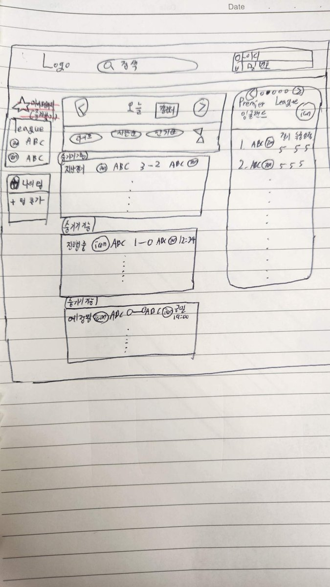
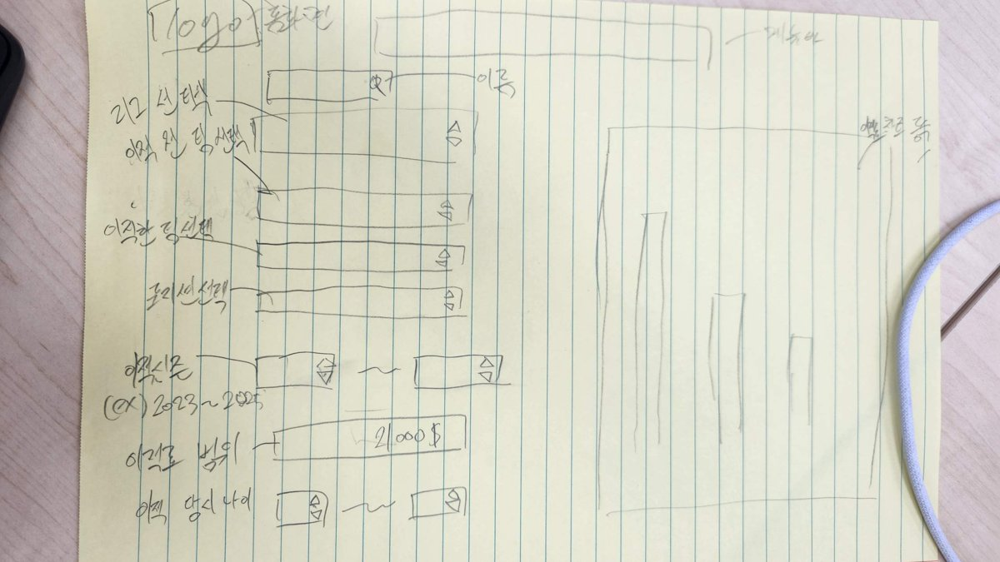
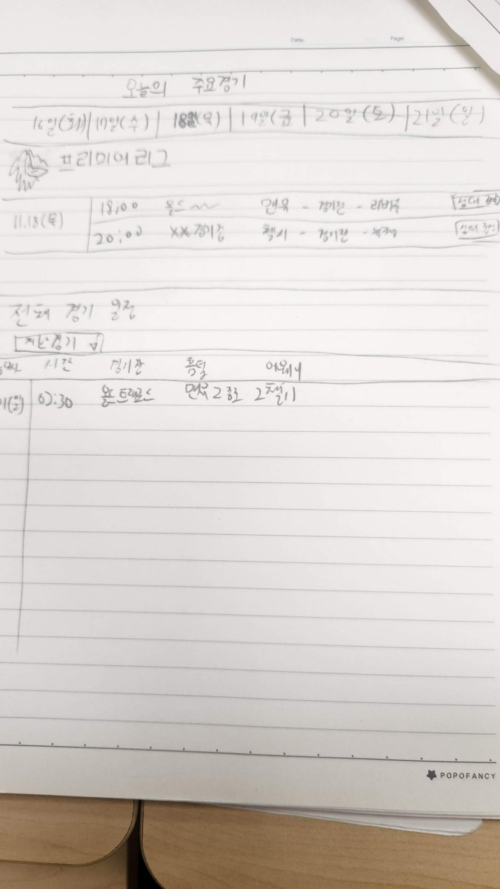

■ 회의 안건
- 메인 화면을 어떻게 구성할 것인가?
- 선수 이적 검색 화면을 어떻게 구성할 것인가?
- 경기 일정 화면을 어떻게 구성할 것인가?
■ 주요 논의 내용
- 메인 화면
- 상단: 로고, 검색창, 로그인(아이디/비밀번호)
- 좌측: 즐겨찾기한 리그 목록, 나의 팀, 팀 추가
- 중앙: 날짜 이동 및 캘린더, 라이브, 시간순, 인기순 정렬
- 중앙: 지난 경기 / 진행 중 경기 / 예정된 경기 목록
- 우측: 리그 순위표(경기 수, 승, 무, 패), 슬라이드로 리그 전환

- 선수 이적 검색 화면
- 상단: 로고(홈 화면 이동), 메뉴바
- 좌측 검색 조건: 이름 검색, 리그 선택, 이적 전 팀 선택, 이적한 팀 선택, 포지션 선택
- 범위 조건: 이적 시즌, 이적료 범위, 이적 당시 나이
- 우측: 검색 결과를 이적료 순 막대그래프로 표시

- 경기 일정 화면
- 오늘의 주요 경기: 요일별 탭, 리그별 경기, 상세 정보 버튼
- 전체 경기 일정: 지난 경기 / 예정 경기 선택, 날짜,시간,경기장,홈팀,스코어,원정팀 표

■ 향후 실행 계획
- 스케치를 바탕으로 HTML/CSS 화면 구현
- 각 화면에 스포츠 API 데이터 연동
- 이적 검색 조건을 DB 쿼리로 처리하고 결과 그래프 구현
|